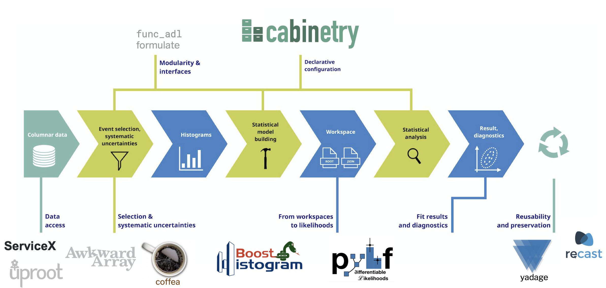

Jump to: Data processing GC - Analysis GC - Training GC
Grand Challenges
IRIS-HEP is establishing institute-wide “Grand Challenges” to assess our progress toward the primary institute high-level goals. These challenges are meant to frame and organize many of the specific milestones and deliverables in IRIS-HEP. As these challenges will be organized together with the US LHC Operations programs, the LHC experiments and other partners, we expect some future evolution and iteration in the overall scope and timeline.
Data Processing Grand Challenge
During a nominal year of HL-LHC data taking, ATLAS and CMS together expect to take close to one exabyte of RAW data. Both experiments intend to process each year’s worth of data as early as possible in the year after. A reasonable working assumption is thus that one exabyte of data across both experiments will have to be processed in 100 days, or roughly 10 PB/day, or 1 Tbit/sec.
The RAW data will reside on tape archives across the Tier-1s and CERN, and will get processed at Tier-1s, Tier-2s, and HPC centers. It is highly likely that the two experiments will overlap in time and at least some processing locations, e.g. the large DOE and NSF HPC centers. And it is virtually guaranteed that both will overlap on many network segments worldwide.
IRIS-HEP, together with the US LHC Operations programs, the ATLAS and CMS global collaborations, and the WLCG arrived at a series of data challenges for the next several years (2021, 2023, 2025, 2027), during which the capabilities and performance of the global infrastructure will be slowly scaled out to reach HL-LHC requirements. This includes three levels of challenges that interleave and build on each other. First, there will be functionality evaluations during which new functionality of various infrastructure software products are tested. Second are scalability challenges of such individual products, and third, global production challenges in alternate years during which the production systems are exercised at increasing scale. The first two types of challenges feed into the third as new products providing new functionality, or scale, enter the production systems over time. IRIS-HEP is engaged in these challenges at all levels via projects in multiple of its focus areas.
Analysis Grand Challenge
The large increase in data volume at the HL-LHC requires rethinking how physicists interact with the data when developing and performing analysis. In addition to raw throughput, it is critical that analysis systems are flexible, easy to use, and have low latency to facilitate the design stages. The Analysis Grand Challenge was designed to span the scope of Analysis Systems focus area, transverse a vertical slice through the tools being developed by the Analysis Systems focus area, and increase intra-Institute connections with DOMA and SSL. The goal is to demonstrate that the analysis system can not only cope with the increased data volume, but can also deliver enhanced functionality compared to the analysis systems used at the LHC today. The challenge is formulated as a user story with assumptions, and acceptance criteria.
The Analysis Grand Challenge includes both integration of software components for analyzing the data as well as the deployment of the analysis software at analysis facilities. The vertical slice implements the functionality needed for a prototypical analysis use case with a moderately complex analysis with multiple event selection requirements, observables to be histogrammed, and systematic uncertainties that must be taken into account. The image below gives an overview of the software tools that must be integrated for this vertical slice.
{kind=link}

In addition, the challenge incorporates enhanced functionality relative to the the analysis systems used at the LHC today
- End-to-end analysis optimization including systematics on a realistically sized HL-LHC (∼200 TB) end-user analysis dataset
- Analysis Preservation & Reinterpretation: The ability to preserve the optimized analysis (in git repositories, docker images, workflow components, etc.), reproduce results, and reinterpret the analysis with a new signal hypothesis.
The inclusion of differentiable programming, a relatively new concept in HEP, into the challenge carries some risks. We note however that it has the potential to move the field forward in several important ways:
- Intellectual Leadership: It is a modern paradigm growing and abstracting from the success of deep learning, and a more natural fit to HEP than replacing everything with machine learning.
- Increased Functionality: We will have more sensitive analyses. Differentiable analysis systems would accelerate and improve essentially all fitting / tuning / optimization tasks. It also facilitates propagation of uncertainty in a more powerful way and paves the way to hybrid systems that fuse traditional approaches and machine learning more seamlessly.
- Connection with Industry: This has been an effective conduit to connections with Google (Jax and Tensorflow teams) and the pytorch community.
- Foster Innovation: Differentiable programming opens up a new range of possibilities for performing analysis in physics at the HL-LHC.
- Training & Workforce development: Young people entering the job market with Machine Learning and Differentiable Programming skills will have a unique and valuable skill set. Differentiable programming will force physicists to take an end-to-end approach to problem solving, a skill that is already looked for both within and outside HEP.
This challenge involves milestones and deliverables in DOMA, Analysis Systems, and SSL. Year 3 will include a Blueprint and other meetings focused on scoping of the target analysis, the needed capabilities of an analysis system, and roadmaps for how the components will interact. Year 4 will include initial benchmarking of analysis system components and integrations, and we aim to execute the analysis grand challenge in Year 5.
The video below provides an overview of the tools being developed by the Analysis Systems focus area, the deployment of those tools on analysis facilities, and the integration of these efforts in the context of the Analysis Grand Challenge.
Training Grand Challenge
We are now working to define, with the larger community, a series of specific goals for the period 2021-2023 in four categories and to work with the community to achieve them.
- Scalability - We aim for sufficient scalability in the training activities such that all students and postdocs can receive training in both the introductory material and the more advanced material. In the steady state we expect a required scale approximately equal to the number of incoming students each year.
- Sustainability - We aim to develop community processes by which both the instructors involved in training activities, and the training materials themselves, are continually renewed and meet the other two goals.
- Training Scope - We aim for a curriculum (introductory, intermediate, advanced) that broadly meets the needs of the community and evolves over time as needed.
- Diversity and Inclusion - The participation in the training should be representative of our community and (as we engage earlier in the pipeline) should work to represent the society at large